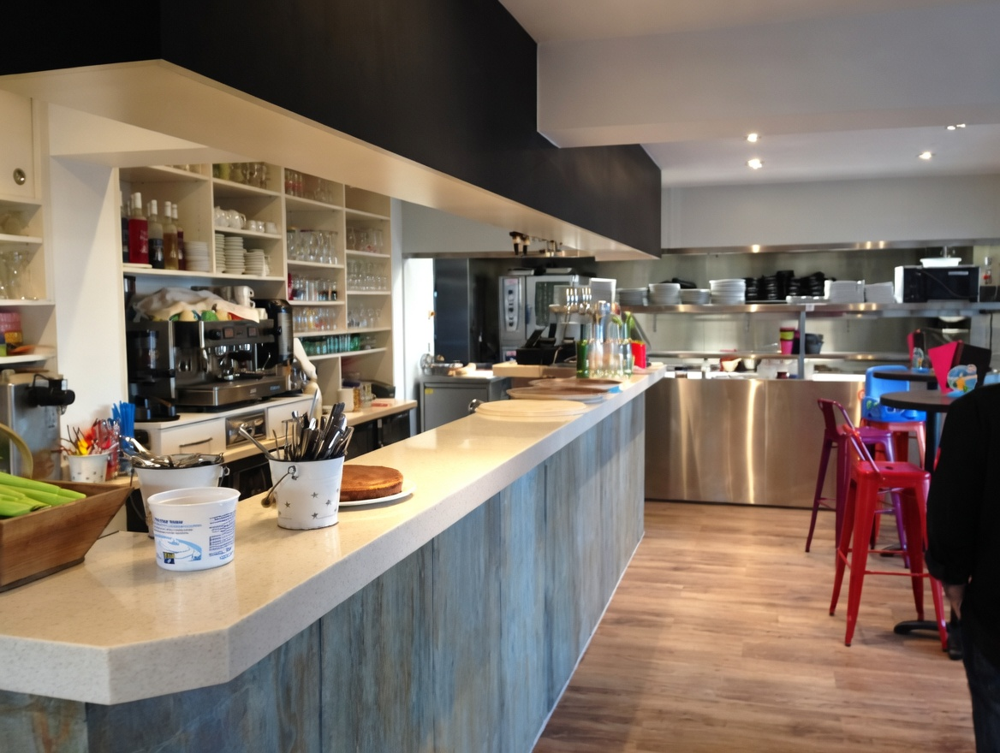

L'Esprit de la Maison
Une cuisine animée par les vents de l'Île
Au bout du monde rétais, là où les vagues rythment le temps, le restaurant Au Gré du Vent vous propose une cuisine traditionnelle et authentique, généreuse et soignée. Notre chef met à l'honneur les produits de la mer pêchés localement, ainsi que les inspirations du marché rétais.
Prenez place sur notre magnifique terrasse abritée pour une dégustation au grand air, ou profitez du confort de notre salle élégante. Que vous veniez partager une majestueuse Parillada ou notre renommée Mouclade, l'expérience se veut intime et inoubliable.
L'Équipe Au Gré du Vent
